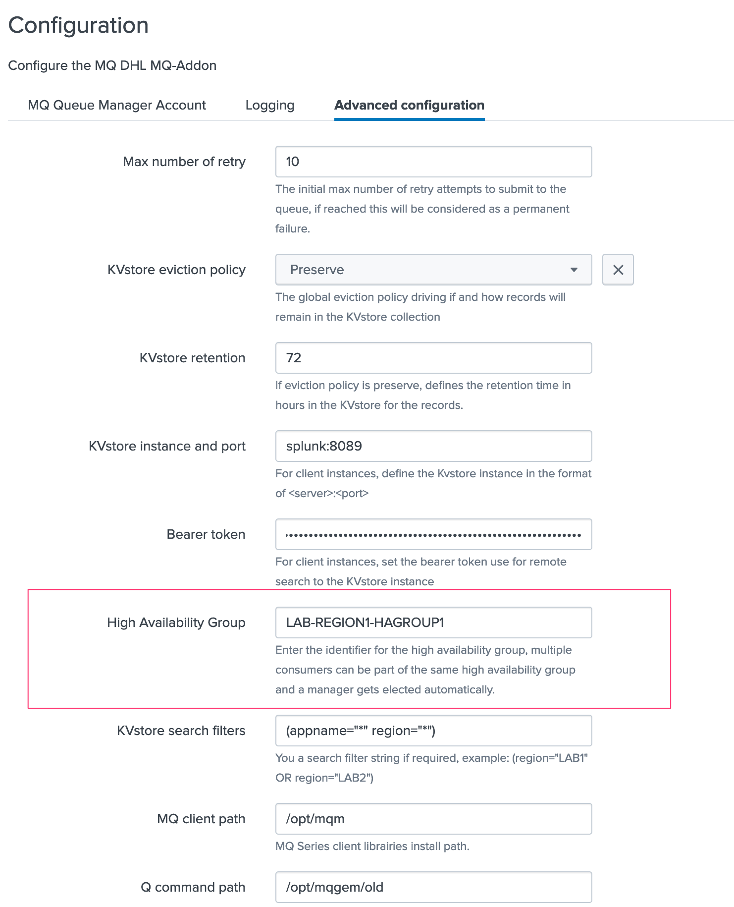
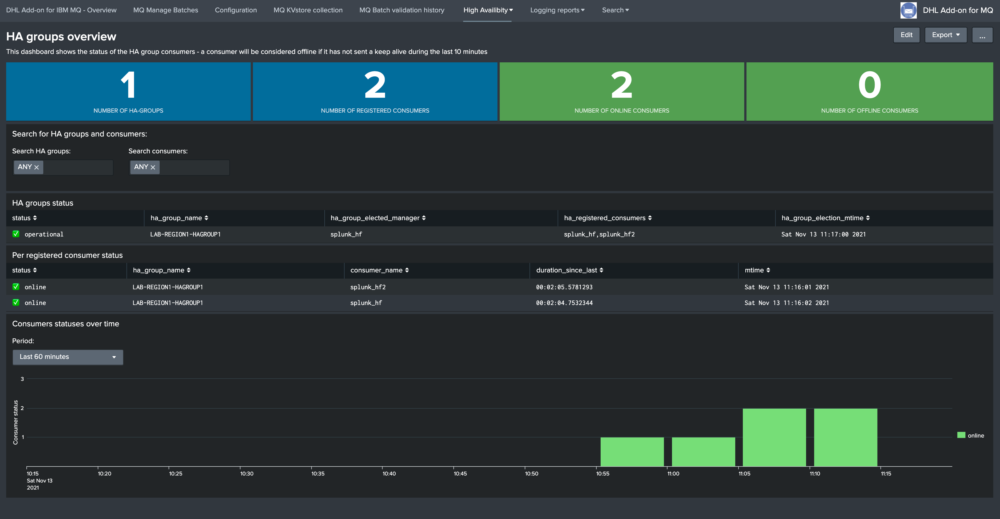
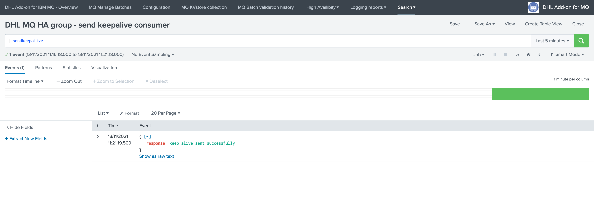
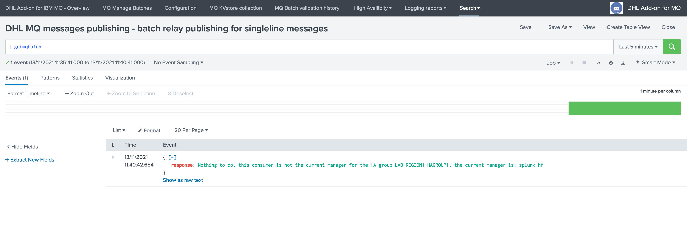
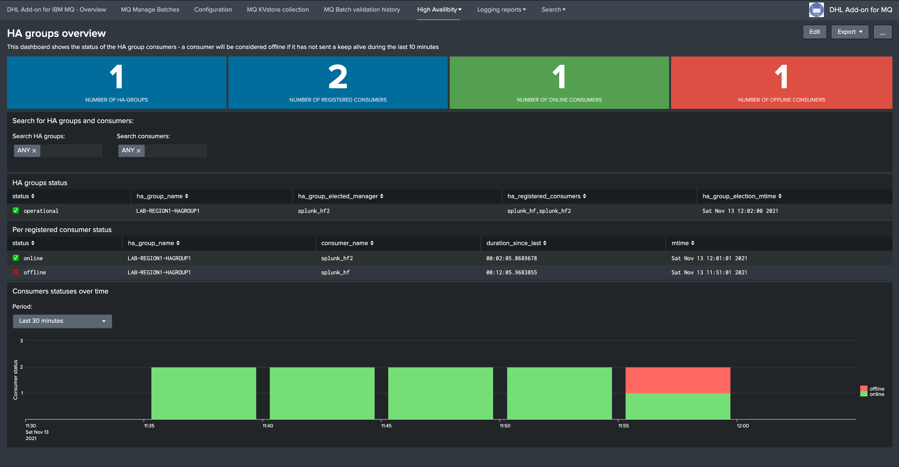
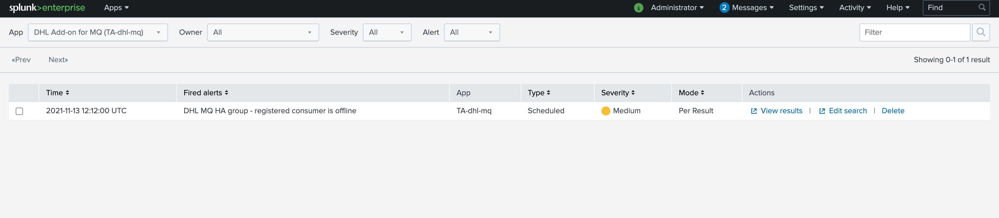
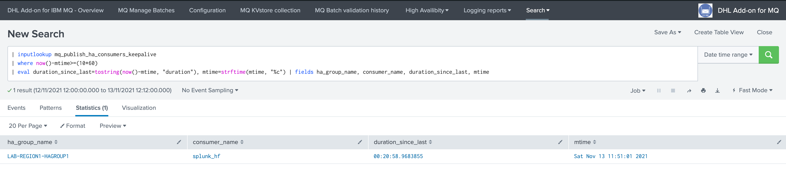
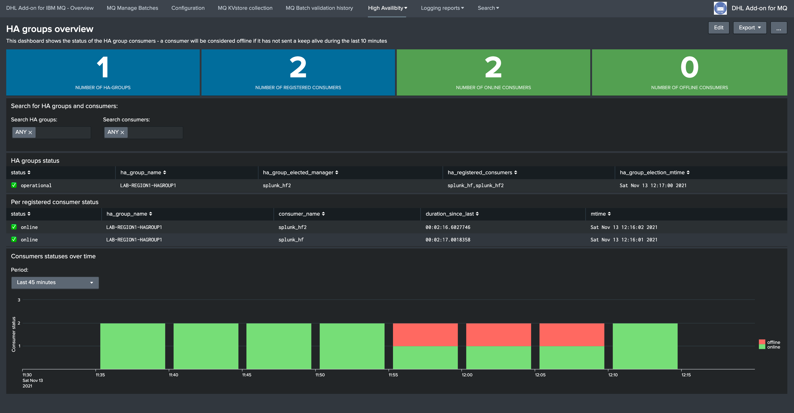

High Availability¶
Introduction¶
The Add-on supports high availability based on the following scheme:
Multiple Heavy Forwarders can be members of a same HA group
The HA group is a an identifier configurable in the Add-on configuration UI
Every consumer sends keep alive Metadata to the SHC layer on a regular basis, keep alive Metadata are stored in a KVstore
The SHC performs a manager election per HA group on a regular basis recycling these keep alive Metadata, by HA group a manager gets elected depending on the conditions
Evevy consumer retrieves and caches the HA groups election Metadata, and stores in a local KVstore collection
When the consumer sees messages pending from being processed, it verifies which member is the manager for its HA group using the local manager cache information
If it is the manager for its group, messages are processed, otherwise the consumer remains inactive and does not process the messages
When a manager is detected as offline based on how long we didn’t get a keep alive, any other online member from the group gets elected
If there no online member active in the HA group, there is no manager elected and we cannot consume messages any longer until at least one member is online again
The whole process can take up to 5/10 minutes in case of an outage on the manager consumer during which we are not going to consume messages
However, the process is fully automated and transparent, maximum 10 minutes after the outage happens on the manager, we start consuming using any of the online members
Configuration¶
The configuration stands on the consumer (Heavy Forwarder), define an HA group for the consuming pool:
{kind=link}
The HA group can be:
A string identifier of your choice, but using a meanfull naming convention is recommended
The HA group should ideally describe the scope and purpose of the consumer, such as the application scopes and regions
This is especially true as the Add-on provides analytic and alerting on High Availability, so the HA group is a metadata information allowing you to understand the context
The HA group is the only configuration required, the whole process is fully automated and there are no interactions required either.
A few minutes after the HA group was configured, the High Availability overview dashboards shows the HA group and members statuses:
{kind=link}
Keep alive from consumers¶
Every 5 minutes, consumers send Keep Alive Metadata to the SHC using a bearer token based authentification and target defined in the configuration UI of the consumers:
{kind=link}
Keep alive Metadata are stored automatically on the SHC in a KVstore collection called “mq_publish_ha_consumers_keepalive”:

Manager per HA group election on the SHC¶
Every 5 minutes, the SHC performs and maintains the manager election, the results gets stored in a KVstore called “mq_publish_ha_groups”, the process is as well collected in a summary index for auditing and alerting purposes:
report: DHL MQ HA group - manager group election
{kind=link}
HA groups Metadata caching on the consumers¶
Every 5 minutes, every consumers retrieves the HA group KVstore content from the SHC and stores a cached copy in a local KVstore called “mq_publish_local_cache_ha_groups”:
report: DHL MQ HA group - get ha groups from remote storage
The purpose of the local cache is for the consumer to query the local cache when attempting to verify the manager status of its own group, rather than querying the remote storage during the execution, for high performance and traffic limitation purposes
When the consumers verifies which member is the manager for its own group, it consults the local storage rather than the remote storage on the SHC
{kind=link}
Consumers manager node verification¶
When the consuming process is executed on the consumer, it verifies which member if the manager member querying the local KVstore cache, and will consume the messages accordingly.
Batch consuming for single line messages¶
On a member which is not the manager for the HA group, the consuming process will show up the following informational message:
{kind=link}
Modular alert for multiline messages and failures retries¶
The following message will be logged by the passive consumer:
2021-11-13 11:46:25,036 INFO pid=26863 tid=MainThread file=cim_actions.py:message:280 | sendmodaction - signature="Nothing to do, this consumer is not the current manager for the HA group LAB-REGION1-HAGROUP1, the current manager is: splunk_hf" action_name="mq_publish_message_relay" search_name="DHL MQ messages publishing - relay publishing" sid="scheduler__admin_VEEtZGhsLW1x__RMD502cf00345f6021ed_at_1636803960_89" rid="0" app="TA-dhl-mq" user="admin" action_mode="saved" action_status="success"
When the active manager goes offline¶
When the current manager goes offline for any reason, for instance:
It cannot send Keep alive Metadata any longer to the SHC (network issues, authentication issues, etc)
Splunk service on the consumer is down, or not operational
A configuration issues on the consumer prevents the normal Keep alive execution (application was uninstalled, reports disaabled etc)
The issue is detected within the next 10 minutes maximum and another member from the HA group gets elected:
{kind=link}
The out of the box alert detects the offline consumer and notifies Splunk and any configured third party action:
 {kind=link}
{kind=link}
During the time of the manager outage detection which can take up to 10 minutes, we are not consuming messages for the HA group any longer
Any pending batch which was approved remains pending until we have at least one online consumer in the HA group
When a new manager gets elected, messages start to be processed transparently using the new manager for the group
When the issue is fixed on the previsouly elected manager, and it is detected again, the member remains a passive member as long as the current manager remains online
When the member that suffered from an outage is back online, the High Availability dashboard shows its status is back in the pool, the member becomes a valid election candidate again:
{kind=link}
If for some reason, a given consumer cannot access to the SHC any longer, its own status is unknown and it will no longer process messages until the service is back again
The whole process is entirely automated, from the discovery of the HA groups to the management of the HA group managers, no intervention is required at any point in time for the consuming process to be highly available on multiple Splunk Heavy Forwarders.
Troubleshooting¶
Running the send keepalive manually¶
If the Heavy Forwarder is reported to be offline, you can run directly the send keepalive report and check out the output of the search.
If for example, the Heavy Forwarder cannot reach the Splunk SHC for any reason, authentication issues or network constraints for instance, the following would be reported:
In normal circumstances, the following will be reported:

If the connection is failing due to an authentication issue:

If the connection is failing due to a network issue or configuration issue in the target definition:

When the send keepalive is successful, a record will be created / updated concerning this specific Heavy Forwarder:
| inputlookup mq_publish_ha_consumers_keepalive | eval duration_since_last=tostring(now()-mtime, "duration"), mtime=strftime(mtime, "%c") | fields ha_group_name, consumer_name, duration_since_last, mtime

In case of an issue, the out of the box alert and the High Availability dashboard allows to quickly idenfity the failing node, and perform the investigation steps:

If in a given HA group, all the consumer nodes are seen as offline, the group manager will be tagged as None, consumption of the messages is not possible until at least one node is back online: